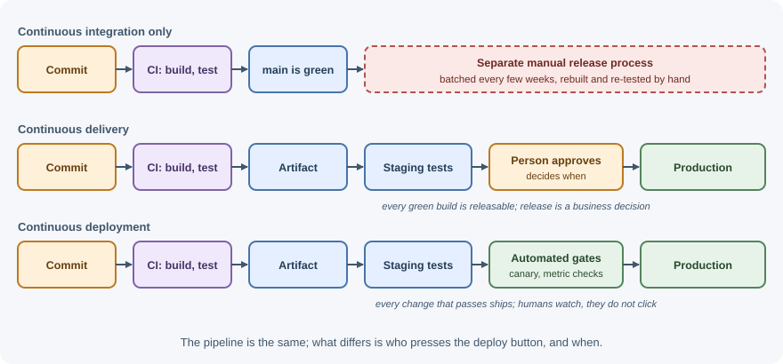
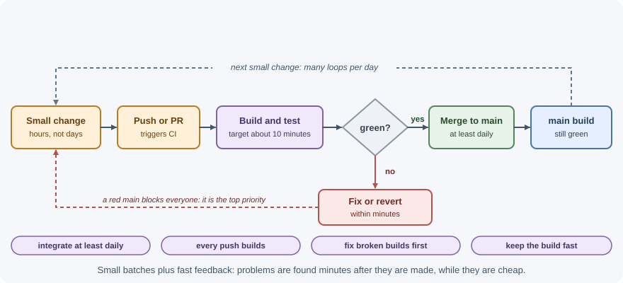

Continuous Integration Fundamentals¶
Continuous integration (CI) is a development practice, not a tool: everyone merges small changes into a shared main line at least daily, and every merge is verified by an automated build and test run. Continuous delivery extends CI so that every verified change is ready to release; continuous deployment releases each one automatically.
This lesson explains the differences between CI, continuous delivery, and continuous deployment, why fast feedback and small batches matter, how teams keep the build green, what a minimum CI pipeline should check, and how to measure delivery performance with DORA's metrics.
Why it matters¶
Integration problems grow with the time between integrations. Two developers who merge every few hours meet small conflicts while the context is fresh; two who merge after three weeks meet a tangle that takes days to unpick, and the bugs they find could have been introduced by any of hundreds of changes. CI turns integration from a risky phase into a continuous background activity. It is also the foundation of everything later in the pipeline: you cannot deploy safely and often if the main line is not reliably green, and you cannot improve delivery performance you do not measure.
Real-world usage¶
- The definition. Martin Fowler's Continuous Integration defines CI as each team member merging changes into the codebase at least daily, with each integration verified by an automated build and tests. Its practices include "Fix Broken Builds Immediately" (quoting Kent Beck: "nobody has a higher priority task than fixing the build") and "Keep the Build Fast", with the Extreme Programming guideline of a ten-minute build.
- Google. The CI chapter of Software Engineering at Google describes TAP, Google's continuous build, which handles more than 50,000 unique changes and runs more than four billion test cases a day. Teams run a fast, reliable subset of tests before submit; a change that passes it has a 95%+ chance of passing everything else, and the rest run after submit, with fast rollback when something breaks.
- DORA. DORA's software delivery performance metrics (change lead time, deployment frequency, failed deployment recovery time, change fail rate, and deployment rework rate) are the standard way to measure whether CI/CD is working, and its continuous integration capability page ties CI to trunk-based development and fast automated tests.
Popular tools and providers: GitHub Actions, GitLab CI/CD, Jenkins, CircleCI, Buildkite, Azure Pipelines, AWS CodeBuild and CodePipeline, Google Cloud Build, and TeamCity.
How it works¶
Integration, delivery, and deployment¶
| Practice | Promise | What is automated | Who decides to release |
|---|---|---|---|
| Continuous integration | main always builds and passes tests |
Build and test on every change | Release is a separate process |
| Continuous delivery | Every change on main is releasable |
Build, test, package, deploy to test environments, release mechanics | A person, with one approval |
| Continuous deployment | Every change that passes goes to production | Everything, including the release decision | The pipeline's automated gates |

Continuous delivery does not require deploying every commit; it requires that you could. The release decision becomes a business choice (wait for marketing, a regulatory sign-off, an app store window) instead of an engineering project.
Fast feedback¶
The value of a check depends on how soon it reports. Feedback arrives in layers, from fastest and cheapest to slowest and most expensive:
| Layer | Typical delay | Examples |
|---|---|---|
| Editor | Seconds | Type errors, lint warnings |
| Pre-commit hook | Seconds | Formatting, secrets in staged files |
| Pull request CI | Minutes | Unit and integration tests, build |
| Post-merge pipeline | Minutes to an hour | Full test suite, staging deploy, e2e tests |
| Production | Minutes to days | Error rates, latency, user reports |
The aim is to catch each class of problem at the earliest layer that can catch it reliably. A pull request pipeline of about ten minutes keeps developers waiting for the result instead of switching tasks; at 45 minutes they stop waiting, start batching changes, and the feedback loop breaks.

Trunk and small batches¶
CI requires a shared main line that everyone integrates into frequently, which is why DORA calls trunk-based development a required practice for CI (see branching strategies). Small batches make every later step cheaper:
- Review: a 150-line change is read; a 3,000-line change is skimmed.
- Diagnosis: if a build that contains 1 change fails, you know the culprit; if it contains 40, you start bisecting.
- Rollback: reverting a small change removes little else.
- Conflicts: less divergence means fewer and smaller conflicts.
A useful rule of thumb from DORA: three or fewer active branches, merged to trunk at least daily, and no code freezes.
Keeping the build green¶
The main line is shared infrastructure; when it is red, nobody can trust
their own results, and changes pile up on top of a failure. Teams that do
CI well treat a red main as a stop-the-line event:
- Revert first, investigate second. Restoring green takes minutes; debugging may take hours.
- Make the culprit obvious: small commits, required checks on PRs, and clear failure output.
- Own it: the author of the breaking change fixes it, or a rotating "build cop" makes sure someone does (Google's practice).
- Fight flakiness: a test that fails randomly teaches people to ignore red, which destroys the signal. Quarantine and fix flaky tests (see testing and quality gates).
- Prevent combination failures: require PR branches to be up to date
or use a merge queue, so
mainis tested as it will be.
What a minimum CI pipeline checks¶
| Step | Purpose | Typical time for TaskFlow API |
|---|---|---|
| Check out the exact commit | Test what was pushed | Seconds |
Set up the runtime from .nvmrc |
Same Node.js version as production | Seconds |
npm ci |
Install exactly the lockfile's versions, fail if it is out of sync | 20-60 s (faster with caching) |
| Lint and format check | Catch errors and style issues mechanically | Seconds |
| Type check (TypeScript projects) | Catch type errors | Seconds to a minute |
| Unit tests | Logic in isolation | Under a minute |
| Integration tests | API plus a real MongoDB | 1-3 minutes |
| Build | The build that would ship actually works | Under a minute |
| Dependency and secret scanning | Known vulnerabilities, leaked credentials | Seconds to a minute |
Later stages add packaging (a container image), deployment to staging, end-to-end tests, and security scanning of the artifact; those are covered in pipeline design and the pages after it.
Two principles keep CI honest:
- CI runs the same commands developers run. Put the logic in
package.jsonscripts (or a Makefile), and keep the CI file thin. If CI does something special that nobody can run locally, failures are hard to reproduce. - CI uses the same versions as production: runtime version, lockfile, and ideally the same base image.
Presubmit and post-submit¶
Not every test belongs before merge. Google's rule of thumb is to run only fast, reliable tests before submit and the slower, larger tests after, accepting some rollbacks in exchange for developer speed. A typical split:
| Before merge (PR) | After merge (main) |
|---|---|
| Lint, type check, unit tests, integration tests with service containers, build | Full end-to-end suite against staging, performance tests, long-running security scans, multi-platform builds |
Whatever runs after merge must have a clear owner and a fast revert path, because failures there affect everyone.
Measuring delivery: the DORA metrics¶
DORA's research program measures software delivery performance with these metrics, defined on dora.dev:
| Group | Metric | Definition (DORA) |
|---|---|---|
| Throughput | Change lead time | Time for a change to go from committed to version control to deployed in production |
| Throughput | Deployment frequency | Number of deployments over a period, or the time between deployments |
| Throughput | Failed deployment recovery time | Time to recover from a deployment that fails and requires immediate intervention |
| Instability | Change fail rate | Ratio of deployments that require immediate intervention following a deployment |
| Instability | Deployment rework rate | Ratio of deployments that are unplanned and happen as a result of an incident in production |
The first four are the long-standing "four keys" (failed deployment recovery time replaced the older "time to restore service" or MTTR naming in 2023); deployment rework rate was added in 2024. Measurement rules, the history of these changes, and DORA's published benchmarks are covered in measuring delivery performance.
![Diagram: one week of TaskFlow API deployments, four per day for 20 in total; a change committed Monday at 09:10 is live at 11:40; on Tuesday a deployment fails and is rolled back, recovered in 35 minutes; on Thursday a deployment fails and an unplanned hotfix restores service after 50 minutes; the resulting throughput metrics are deployment frequency 4 per day, change lead time 2 hours 30 minutes, failed deployment recovery time 42.5 minutes, and the instability metrics are change fail rate 10 percent and deployment rework rate 5 percent.](../dora-metrics-worked-example.svg)
DORA's guidance on using them well:
- Measure one application or service at a time; blending very different systems hides the signal.
- Use them to track improvement over time, not as targets or to rank teams; mandated targets invite gaming.
- Use several metrics together: throughput and instability can pull against each other, so improving one while the other collapses is visible. DORA's research finds they usually improve together.
When to use and when not to use¶
| Context | Recommendation |
|---|---|
| Any team writing code together | CI: always, from the first commit |
| Web service or API with good tests and fast rollback | Continuous delivery, moving to continuous deployment as confidence grows |
| Regulated releases needing documented approval | Continuous delivery with a recorded approval gate (protected environment) |
| Mobile apps in app stores | Continuous delivery to internal and beta tracks; store release is gated by review |
| Desktop or on-premises software | Continuous delivery of signed builds; customers choose when to install |
| Database migrations and irreversible changes | Automate them, but gate with expand-and-contract patterns (see zero-downtime database migrations) |
Continuous deployment is not a fit when you cannot detect a bad release quickly (no monitoring or automated rollback), when releases are irreversible, or when external commitments fix release dates. Those teams still benefit from continuous delivery.
Practical examples¶
Scripts as the contract between laptops and CI¶
{
"name": "taskflow-api",
"type": "module",
"engines": { "node": ">=24" },
"scripts": {
"lint": "eslint .",
"format:check": "prettier --check .",
"test": "node --test \"test/unit/**/*.test.js\"",
"test:integration": "node --test \"test/integration/**/*.test.js\"",
"build": "node scripts/build.js",
"ci": "npm run lint && npm run format:check && npm test && npm run test:integration && npm run build"
}
}
# .nvmrc
24
A developer runs npm run ci before pushing and gets the same verdict CI
will give. The workflow file only sets up the environment and calls these
scripts.
A minimum CI workflow¶
# .github/workflows/ci.yml
name: CI
on:
pull_request:
push:
branches: [main]
permissions:
contents: read
concurrency:
group: ci-${{ github.ref }}
cancel-in-progress: ${{ github.event_name == 'pull_request' }}
jobs:
verify:
runs-on: ubuntu-latest
timeout-minutes: 15
services:
mongo:
image: mongo:8.0
ports: ["27017:27017"]
options: >-
--health-cmd "mongosh --quiet --eval 'db.adminCommand({ ping: 1 })'"
--health-interval 5s --health-timeout 5s --health-retries 10
env:
MONGODB_URI: mongodb://localhost:27017/taskflow_test
steps:
- uses: actions/checkout@v7
- uses: actions/setup-node@v7
with:
node-version-file: .nvmrc
cache: npm
- run: npm ci
- run: npm run ci
concurrency cancels superseded runs on pull requests (a new push makes
the old run pointless) but never cancels a main run that has started.
timeout-minutes stops a hung job long before the six-hour default. Each
part is explained in GitHub Actions in depth.
Computing DORA metrics from deployment records¶
// scripts/dora.js: compute DORA metrics for one service from deployment records
// Usage: node scripts/dora.js deployments.json
import { readFile } from "node:fs/promises";
const records = JSON.parse(await readFile(process.argv[2], "utf8"));
// Each record: { deployedAt, commits: [{ committedAt }], failed, recoveredAt, unplanned }
const minutes = (a, b) => (new Date(b) - new Date(a)) / 60_000;
const median = (xs) => {
const s = [...xs].sort((a, b) => a - b);
const mid = Math.floor(s.length / 2);
return s.length % 2 ? s[mid] : (s[mid - 1] + s[mid]) / 2;
};
const times = records.map((r) => new Date(r.deployedAt));
const days = (Math.max(...times) - Math.min(...times)) / 86_400_000 || 1;
const leadTimes = records.flatMap((r) =>
r.commits.map((c) => minutes(c.committedAt, r.deployedAt)),
);
const failed = records.filter((r) => r.failed);
const recovery = failed.map((r) => minutes(r.deployedAt, r.recoveredAt));
console.log({
deploymentsPerDay: +(records.length / days).toFixed(2),
medianLeadTimeMinutes: median(leadTimes),
changeFailRate: +(failed.length / records.length).toFixed(3),
meanRecoveryMinutes: recovery.length
? recovery.reduce((a, b) => a + b, 0) / recovery.length
: 0,
reworkRate: +(records.filter((r) => r.unplanned).length / records.length).toFixed(3),
});
The records can come from GitHub deployments (gh api
repos/example/taskflow-api/deployments), your deploy tool's history,
or incident tickets. Lead time uses each commit's timestamp, so a deploy
that ships five commits contributes five lead times; the median resists
outliers such as a commit that waited on a long-lived branch.
Best practices¶
- Integrate into
mainat least daily, in small batches. - Build and test every push and every pull request automatically.
- Keep the PR pipeline around ten minutes; measure it and treat regressions as bugs.
- Fix or revert a broken
mainimmediately; make "revert first" the default. - Make CI run the same scripts and versions as developers and production.
- Run fast, reliable tests before merge and slower suites after merge, each with a clear owner.
- Quarantine flaky tests and fix them; never normalize re-running until green.
- Track DORA metrics per service as trends, not targets, and use throughput and instability together.
In production¶
- Developers stop waiting for CI and batch their changes. Detect: median PR pipeline time above 30 minutes; PR size and lead time grow. Cause: a slow, serial pipeline with no caching. Fix: parallelize jobs, cache dependencies, move slow suites after merge, and set a time budget (see pipeline design).
mainstays red for hours while people keep merging. Detect: the main branch status is red across several merges. Cause: no stop-the-line norm; nobody owns the breakage. Fix: revert the first failing merge immediately, block merges whilemainis red (required checks or a merge queue), and rotate a build-cop role.- "Works on my machine" failures in CI.
Detect: tests pass locally but fail in CI, or the reverse. Cause:
different Node.js versions,
npm installinstead ofnpm ci, or hidden local state. Fix: pin the runtime in.nvmrc, usenpm cieverywhere, and run the samenpm run ciscript locally. - The team re-runs failed jobs until they pass. Detect: many runs with attempt numbers above 1; failures that vanish on retry. Cause: flaky tests. Fix: track flaky tests, quarantine them out of the required checks with an owner and deadline, and fix the root causes (timing, shared state, order dependence).
- Change fail rate rises after the pipeline got faster. Detect: more rollbacks per deploy over the last month. Cause: tests were dropped or moved after merge without compensating checks. Fix: restore coverage at the right stage, add canary analysis, and review throughput and instability metrics together.
- Leadership compares teams by deployment frequency and numbers inflate. Detect: deployments that change nothing, or metrics that diverge from incident data. Cause: metrics used as targets. Fix: follow DORA's guidance: use metrics per service for improvement conversations, not rankings.
Important terminology¶
- Continuous integration: Merging small changes into a shared main line at least daily, each verified automatically.
- Continuous delivery: Keeping every change releasable, with release as a push-button decision.
- Continuous deployment: Releasing every change that passes the pipeline automatically.
- Main line (trunk): The shared branch everyone integrates into.
- Build: The automated compile, test, and package run for a change.
- Green / red build: A passing or failing pipeline run.
- Stop the line: Treating a broken main line as everyone's top priority.
- Presubmit / post-submit: Checks before merging and after merging.
- Change lead time: Time from commit to running in production.
- Deployment frequency: How often deployments happen.
- Change fail rate: Share of deployments needing immediate intervention.
- Failed deployment recovery time: Time to recover from a failed deployment.
- Deployment rework rate: Share of deployments that are unplanned fixes for production incidents.
Common mistakes and misconceptions¶
- Equating CI with owning a CI server while branches live for weeks.
- Confusing continuous delivery with continuous deployment.
- Letting the pipeline grow to an hour, then wondering why batches grow.
- Re-running flaky tests instead of fixing them.
- Running special commands in CI that developers cannot run locally.
- Using
npm installin CI, which may change the lockfile, instead ofnpm ci. - Treating DORA metrics as targets or comparing unrelated teams with them.
- Assuming a green build means the change is correct; it means the checks you wrote passed.
Revision questions¶
- Define continuous integration, continuous delivery, and continuous deployment, and give one context where each is the right stopping point.
- Why does a ten-minute PR pipeline matter more than it seems?
- What does "stop the line" mean for a red
main, and why is reverting usually the first step? - List the checks in a minimum CI pipeline for a Node.js API and why each is there.
- Which tests belong before merge and which after, and what must be true of the post-merge ones?
- In one month a service had 60 deployments; 6 needed a rollback or hotfix, recovering in 20, 30, 30, 45, 60, and 90 minutes; 4 deployments were unplanned fixes. Compute the change fail rate, mean failed deployment recovery time, and deployment rework rate. (10%, 45.8 minutes, about 6.7%.)
- Why does DORA warn against using its metrics as targets or to compare teams?
- Why should CI call
package.jsonscripts rather than contain the logic itself?